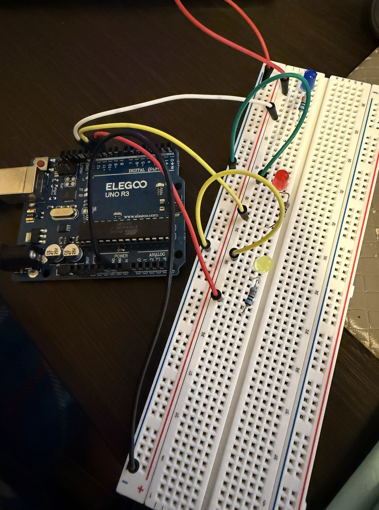
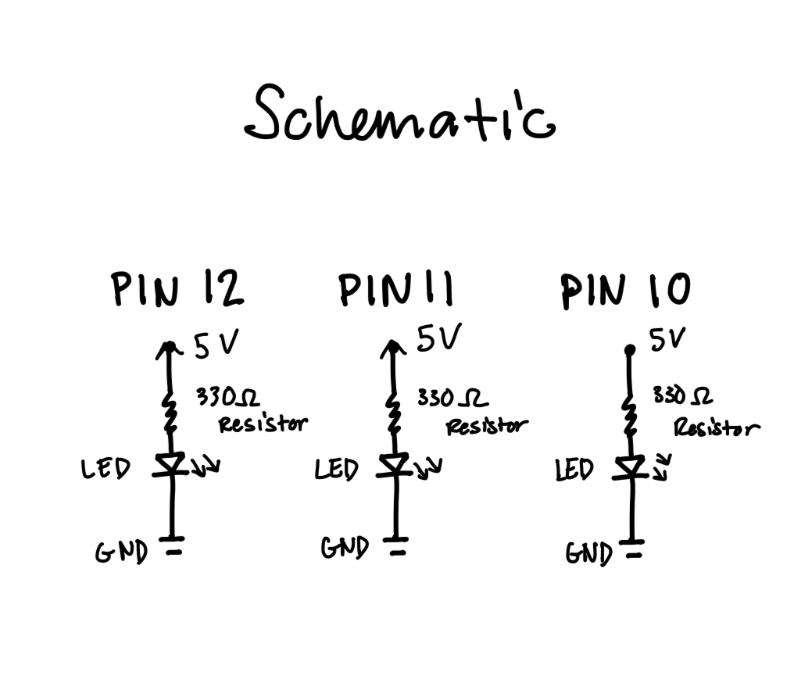
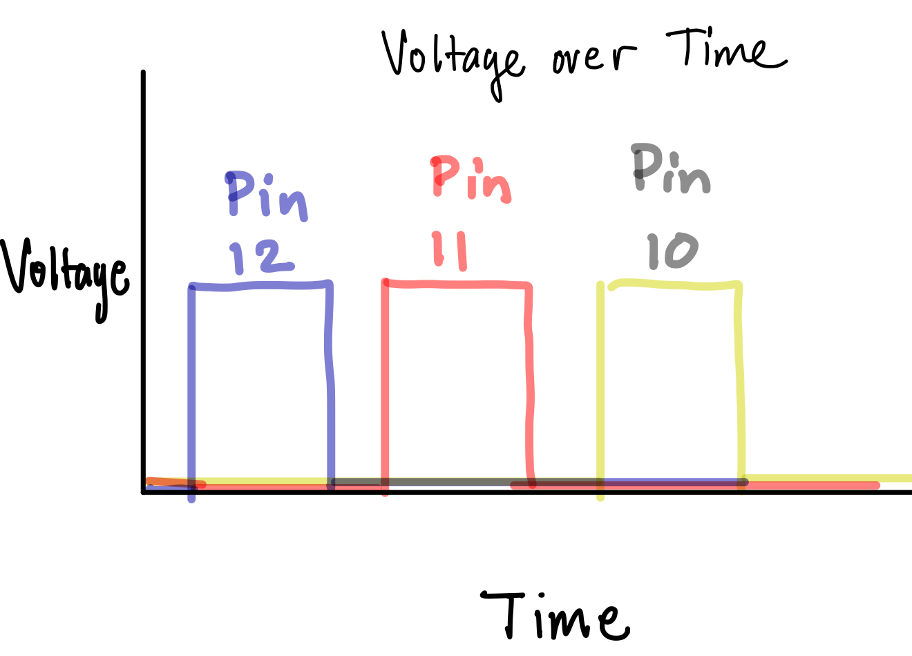

In Assignment 1, I programmed a mini set of holiday lights!
Here is all the documentation for assignment 1!
Overview Photo:

I chose 330 Ω resistors because after calculating the resistance using Ohm's Law and taking into account the voltage drops across the resistors, I found that 330 Ω would allow the current that passes through the circuit to stay under 40mA.
Schematic:

Here is the schematic diagram I drew for this assignment.
Code Snippet
//initializing the timer value, to set a constant of a given value of time
int timer = 180;
void setup() {
//initializing a for loop to assign each LED to a certain value of a pin
//for loop will increment by a value of 1
for(int thisPin = 10; thisPin < 13; thisPin++){
//this is initializing each pin to an output of the LED
pinMode(thisPin, OUTPUT);
}
}
//initializing a loop to repeat the action of the blinking
void loop() {
//initializing a for loop to iterate through each pin
for(int thisPin = 10; thisPin < 13; thisPin++){
//this sets the pin to the HIGH value in order to turn the assigned LED at this specific pin ON
digitalWrite(thisPin, HIGH);
//this will prolong the ON state of the pin for the assigned duration of time
delay(timer);
//this sets the pin to the LOW value in order to turn the assigned LED at this specific pin OFF
digitalWrite(thisPin, LOW);
//this will prolong the OFF state of the pin for the assigned duration of time
delay(timer);
}
}
Additional Questions
Question 1:

Above is the figure for the Voltage over Time for each LED.
Question 2:
I was able to blink 3 LEDs independently with my Arduino. I used 330 Ω resistors as I didn't want to damage the Arduino by having a higher current. This drew approximately 27-29 mA of current.
Question 3:
In order to have the LEDs blink so fast that you can't tell that they are blinking, I had to set the timer value to a very low value, to a value of around 10-15.
Question 4:
The only use of AI in this assignment was to assist with converting the formatting of the code snippet. There was no other use of AI for this assignment aside from formatting.